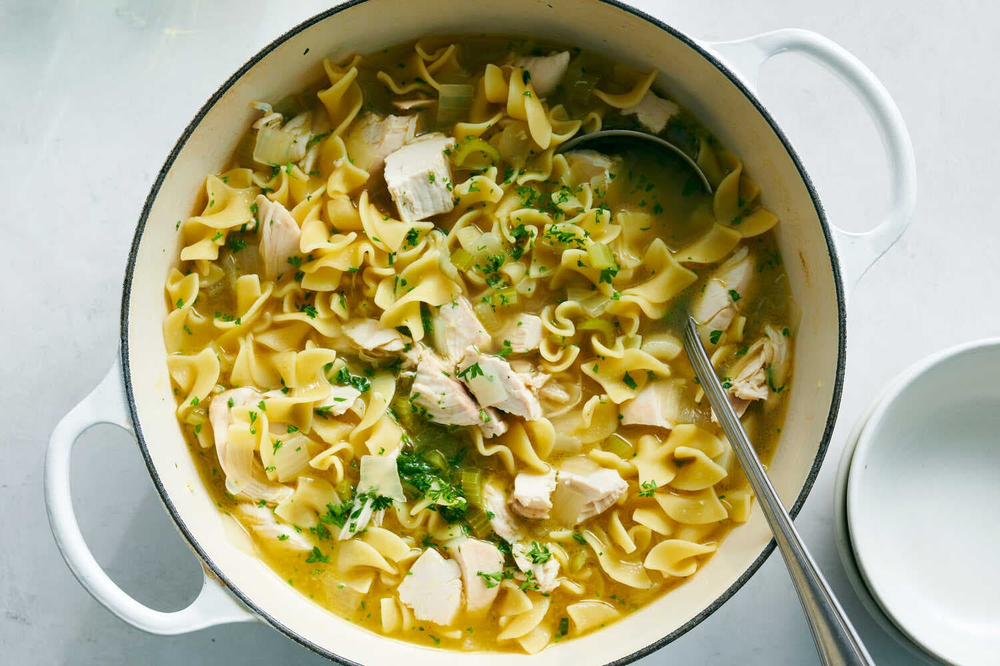

Chicken and Noodles

Description
This easy, one-pot dish is comfort in a bowl. Made with leftover chicken and vegetables you probably have on
hand, it's ready in just half an hour. Boiling the chicken and vegetables makes a delicious stock, and the
chicken tenderizes even more as the egg noodles cook in the broth. The noodles' starchiness adds a smooth
consistency that's made even more velvety with a pat of butter. (Add more butter to make it even creamier.)
Whatever you choose, this inexpensive, cozy dinner is easy to love.
Ingredients
- 4 cups low-sodium chicken stock or broth
- 1 cup diced celery
- 1 cup diced yellow onion
- 4 garlic cloves, minced
- 1½ teaspoons adobo seasoning, such as Goya or Badia
- Black pepper
- 1 (12-ounce) bag extra-wide egg noodles
- 2 cups coarsely chopped leftover chicken
- Salt
- 1 tablespoon butter, for serving (optional)
- Chopped parsley, for serving (optional)
Steps
-
To a large pot, add stock, celery, onion, garlic, adobo and 1 teaspoon black pepper. Bring to a boil
over high heat and continue to boil until the vegetables are soft, about 9 minutes.
-
Add egg noodles and enough water to cover. Cook noodles according to package directions, until al dente.
-
Add chicken and cook until meat is heated through. Taste and season with salt and pepper as needed.
Finish with butter and parsley, if you like.
Go back to homepage